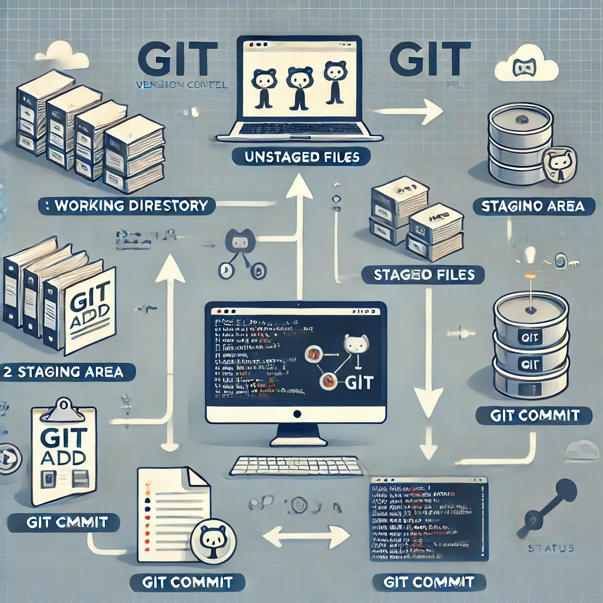
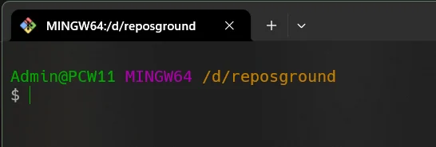
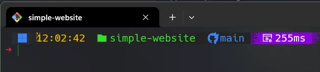

O Git Bash é um aplicativo para ambientes Microsoft Windows que fornece uma camada de emulação para uma experiência de linha de comando do Git. Bash é um acrônimo para 'Bourne Again Shell'. Um shell é um aplicativo de terminal usado para fazer interface com um sistema operacional por meio de comandos escritos. Bash é um shell padrão popular no Linux e macOS. O Git Bash é um pacote que instala o Bash, alguns utilitários bash comuns e o Git em um sistema operacional Windows.
As imagens acima estabelecem o que deve ser usado na configuração do Git. A opção por um editor de texto na imagem foi o 'Notepad', mas podem ser usados outros editores para a mesma função a critério do usuário.
Após a instalação do Git no terminal Windows temos o que se denomina 'bash' como mostra a imagem abaixo:
A imagem abaixo mostra o mesmo 'bash' customizado, neste caso a personalização foi feita utilizando-se do 'Oh-my-posh'. Eu recomendo que se faça esta personalização para uma melhor experiência de uso do terminal e visualização clara dos comandos do Git.
Na página inicial do site todas definições de Git foram apresentadas. Esta introdução está voltada para o curso de fundamentos de Git.
Seguiremos um roteiro quase que totalmente baseado em um livro denominado "Practical Guide to Git and GitHub For Windows Users", escrito por Roberto Vormittag.
Procuramos usar neste curso introdutório de Git a mesma filosofia adotada pelo livro do autor supra citado onde os princípios de uso do 'Git' são apresentados através de exemplos práticos.
Faremos uso também de uma representação pictórica dos comandos do Git em sintonia ao apresentado nas imagens dos terminais. Esta representação usa uma tecnologia denominada GitGraph criada pela 'Mermaid'.